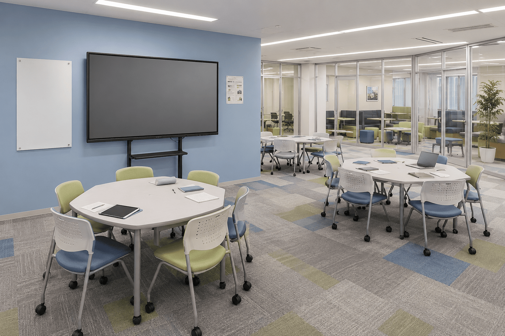

Topic
首都圏は提携ショールームへ
首都圏・東京のお客様には、アクセスしやすい常設ショールームをご案内します。実機にふれながら、画面の見やすさや操作性、設置イメージまでご確認いただけます。導入前にじっくり確かめたい方も、まずはお気軽にご相談ください。
Service
Kokuban BASEは、機器を納めて終わりにはしません。教室の目的に合わせた使い方までご提案し、導入が成果や付加価値につながるよう伴走します。私たちのサポートで実現した例をご紹介します。

人件費の圧縮 ＆ 新しい収益機会
個別指導塾の55インチモデル導入を支援。1対4〜6の少人数制クラス体制づくりまでご提案し、人件費の圧縮と新しいビジネス機会の創出につなげました。
講座のプレミア化
最難関クラスへの導入をサポート。電子黒板ならではの特別感を活かした見せ方をご提案し、生徒のモチベーション向上と講座のプレミア化に貢献しました。

学びの場の魅力アップ
私立中学校のラーニングコモンズ導入を支援。グループワークや発表をより魅力的にする活用方法までご提案し、学びの場の価値を高めました。